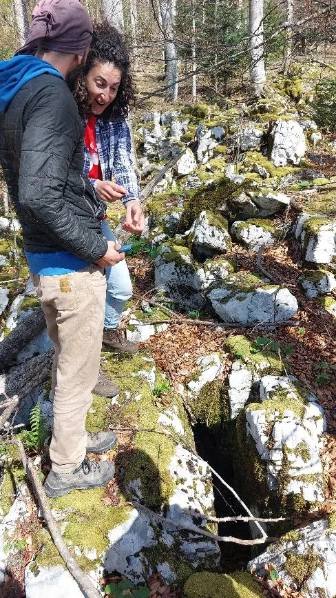

Uskršnje lidarke
Lidar tehnologijom se služimo već nekoliko godina te nam je ona pokazala potencijalne objekte na području Nacionalnog parka Plitvička jezera. S obzirom da napokon imamo priliku koristiti javno dostupne podatke snimanja…

Autorica: Gorana Perić
Fotografije:
Uskršnji vikend, a točnije 19. 4. donosi Klek i teren oko Bocine i Vražje jame. Te dvije jame se već godinama koriste kao jame za školske izlete gdje školarci rade svoje prve metre u vertikalnim speleološkim objektima. Opčinjeni ljepotom Kleka odlučili smo pretražiti teren Lidar snimkama i vratiti se na mjesto zločina, ali ovog puta zaobilazimo gore spomenute jame i pretražujemo 11 potencijalnih objekata.
Lidar tehnologijom se služimo već nekoliko godina te nam je ona pokazala potencijalne objekte na području Nacionalnog parka Plitvička jezera. S obzirom da napokon imamo priliku koristiti javno dostupne podatke snimanja zamolili smo DGU da nam ustupi područja te smo se bacili na posao “kauč speleologije” koja nam je pokazala 11 potencijalnih objekata. Zvuči primamljivo, idemo!
U sunčano i hladno jutro krenulo je 9 odvažnih Marko (organizator istraživanja), Edo, Goga, Lea, Sebastian, Jele, Toni, Iva i Davorin. 7:30 polazak iz Zagreba, dolazak u Ogulin oko 9 i kavica u Jazzbini. Oko 10 napuštamo Ogulin i vozimo se prema Dreznu Brežničkom. Idemo prvo provjeriti lidarke na sjevernom i zapadnom dijelu obuhvata. Makadamskom cestom dolazimo do proširenja pogodnog za parkiranje i idemo na prvu Lidarku. Teren sjeverno od makadama je ograđen pa nalazimo rupu u ogradi i provlačimo se te nakon 5 minuta hoda dolazimo do koordinate koja ispada ćorak:
Vraćamo se do makadamom i zatim hodamo šumskom vlakom južno od makadama prema sljedećoj. Radi se o ne predubokoj jami velikog ulaza. Bacili smo kamen koji nije dugo padao. S obzirom da sa sobom nismo imali opremu ni pribor za crtanje jamu nismo nacrtali što nam je motivacija za novi izlet!
Sugestijom nekih zaključujemo da je vrijeme za marendu te prostiremo velebitaški stol na gustirni. Najgladniji sjedaju i jedu, a Iva, Lea, Toni i Sebastian odlaze prošettat do obližnje koja je ispala pun pogodak.
Nakon marende uzimamo pribor za crtanje te idemo do jame (Ličko, Edo, Sebastian, Jele, Goga). Dok Sebastian i Edo spitaju da bi zabili pločicu na ulaz, Goga objašnjava Jeli osnove Topodroida. Potom se Jele baca na crtanje svojeg prvog nacrta dok joj Sebastian mjeri a Goga daje instrukcije. Za vrijeme crtanja došlo se do spoznaje da svi u jami imamo gojzerice Alpina Tibet te je jama po tome i dobila ime.
Uz Alpinu Tibet, pronašli smo jame Bombina i Info 255 te je ukupna duljina tih 3 objekata iznosila oko 30 metara. Uz ta tri objekta, provjereno je još 7 koji su nažalost ispali “ćorci” i plitke vrtače bez perspektive. Nakon završetka istraživanja pao je gablec #2 te smo se zaputili na zasluženu cugu u Bačvu u Ogulinu. Entuzijazma i motivacije ne manjka, a nove načine istraživanja smo s guštom prigrlili. Područja koja bismo istraživali ima mnogo u RH, a već padaju prvi dogovori za sljedeća istraživanja.